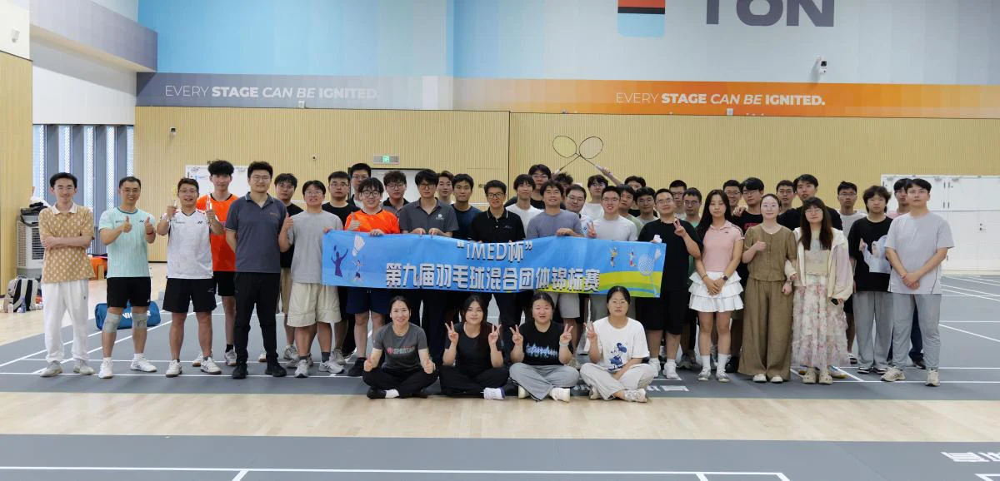
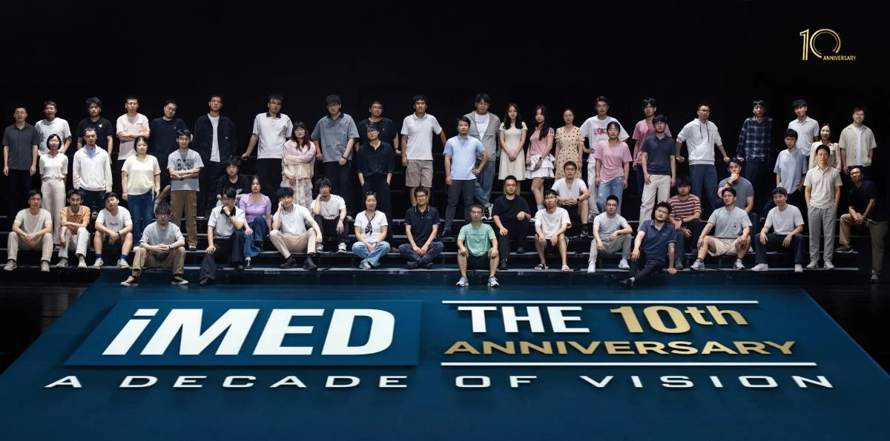

青春作伴，十载同行——iMED十周年暨第九届“iMED杯”羽毛球赛圆满举行
六月的微风，吹拂着属于毕业季的离愁与期盼，也迎来了iMED团队建组十周年的重要时刻。6月11日，第九届“iMED杯”羽毛球混合团体锦标赛暨iMED十周年毕业季活动如期举行。在这个充满纪念意义的日子里，我们以运动、美食与相聚，共同镌刻下这段关于热爱与传承的珍贵记忆。
上午，阳光正好，全体成员齐聚一堂，用一张大合影定格了这意义非凡的瞬间。镜头前，大家并肩而立，笑容灿烂，这不仅是一张全家福，更是iMED十年来薪火相传、携手奋进的生动写照。我们特别邀请了刘江老师返组，与各位老师、同学及毕业生们共同见证这一里程碑时刻。许多已经毕业的校友也特地从各地赶回，与师长同窗重聚。在熟悉的团队氛围中，大家重温昔日的科研岁月，共叙成长情谊，仿佛时光从未走远。
下午，第九届“iMED杯”羽毛球混合团体锦标赛在乐动力·慈溪市体育健身馆正式拉开帷幕。本届赛事旨在丰富团队文体生活，增强凝聚力，共设7支参赛队伍，并将正赛与趣味接力赛巧妙结合，兼顾了竞技性与参与感。赛场上，选手们挥拍如风，凌厉的扣杀、巧妙的吊球、默契的补位与一次次奋不顾身的救球，引来场边阵阵喝彩。而在趣味接力赛环节，比赛更添几分轻松与热烈，队员们在快速轮换中彼此配合，在欢笑与呐喊中展现出iMED人团结协作、积极向上的精神风貌。无论是老师、在组同学，还是返组毕业生，大家都在运动中增进了交流，在比拼中收获了纯粹的友谊。
上午，阳光正好，全体成员齐聚一堂，用一张大合影定格了这意义非凡的瞬间。镜头前，大家并肩而立，笑容灿烂，这不仅是一张全家福，更是iMED十年来薪火相传、携手奋进的生动写照。我们特别邀请了刘江老师返组，与各位老师、同学及毕业生们共同见证这一里程碑时刻。许多已经毕业的校友也特地从各地赶回，与师长同窗重聚。在熟悉的团队氛围中，大家重温昔日的科研岁月，共叙成长情谊，仿佛时光从未走远。
下午，第九届“iMED杯”羽毛球混合团体锦标赛在乐动力·慈溪市体育健身馆正式拉开帷幕。本届赛事旨在丰富团队文体生活，增强凝聚力，共设7支参赛队伍，并将正赛与趣味接力赛巧妙结合，兼顾了竞技性与参与感。赛场上，选手们挥拍如风，凌厉的扣杀、巧妙的吊球、默契的补位与一次次奋不顾身的救球，引来场边阵阵喝彩。而在趣味接力赛环节，比赛更添几分轻松与热烈，队员们在快速轮换中彼此配合，在欢笑与呐喊中展现出iMED人团结协作、积极向上的精神风貌。无论是老师、在组同学，还是返组毕业生，大家都在运动中增进了交流，在比拼中收获了纯粹的友谊。

经过多轮激烈而欢乐的角逐，各支队伍都展现出了极高的竞技水平与团队风采。赛场上没有绝对的输赢，只有全力以赴的拼搏与相互成就的感动。感谢所有参赛选手的倾情投入，也感谢各位老师、师兄师姐、师弟师妹对活动的大力支持，正是大家的共同努力，让这届“iMED杯”充满了温度与力量。
傍晚时分，华灯初上，全体成员齐聚一堂，共赴毕业聚餐。餐桌之间，大家畅谈科研生活中的点滴趣事，回忆那些并肩奋斗的难忘时光，更为即将开启人生新阶段的毕业生们送上最真挚的祝福。欢声笑语中，既有对过往岁月深深的不舍，更有对未来乘风破浪、前程似锦的美好期待。
十载春秋，步履不停；青春作伴，未来可期。本次iMED十周年暨毕业季活动，不仅丰富了团队的文化生活，更为毕业生们留下了温暖而难忘的回忆。愿每一位iMED成员，都能带着团队赋予的祝福与力量，在新的征程中继续追光前行，再创佳绩！
